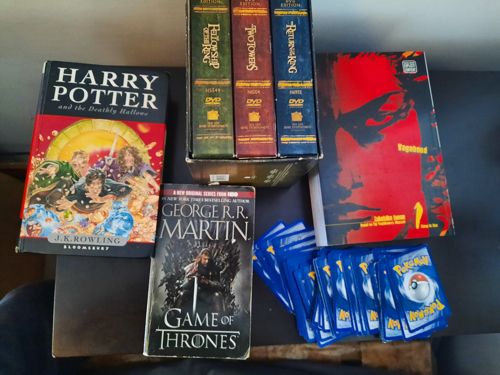

Formulative Stories
When we think about the stories, we have a strong fondness or love for, we think about how much we like that story, why we liked it, or maybe the opposite, that we hate it, and why we hate, but even more important are the stories that shaped us as viewers. When we talk about our favourite movies or tv shows or books or any other for of storytelling, we talk about the ones we like and how those are the most important to us, but I have a different view on this. It is not always the ones we like the most. Or the ones we think are the best that are the most important to us, but more so the ones that formed us as viewers and individuals, there are stories that I experienced as a child, that I may not think as highly of as an adult, whether it my enjoyment of the piece, or of my critical analysis of the piece. There are stories I love, that I will admit are very flawed, in writing, technique, etc. but they still are so important to me, and stories I admit are incredibly well done, but they do not have much of an impact on me.
Let me give you an example, there is a movie you loved as a child, it was the movie that made you love movies, but recently you watched it and realized, this is just okay, it’s not bad, but just okay, but the value it has on you, the way it formed you as a watcher, is so much more important than the really good movie you watched, but rarely think of. These things we watch that influence can determine our taste in many kinds of ways. I will mention some of the stories here that you may see below, like the Lord of the Rings. There are three trilogies that are famous for every single person loving one of them, those being the Star Wars trilogy, the Godfather trilogy, and the Lord of the Rings trilogy, obviously there are other great trilogies, but these are the most frequent and loved ones. It is very likely that whichever one of these trilogies a person loved or liked when they were younger, determined what their favourite genre is. As I loved Lord of the Rings, my favourite genre is fantasy, and when I watched the TV show Game of Thrones, that love for the genre was sealed. I do love other genres, like Sci-Fi, but since the Lord of the Rings, fantasy has been it for me.
But it is not just genre, but love for a certain medium for example can also be determined by these formulative stories, like as a child when I watched the classic Disney films, or even more important were the Anime I watched, films like Spirited Away, or the other Studio Ghibli films, the series I watched with my older brother and his best friend, like Naruto, Dragon Ball and more. These stories shaped my love for animation, and to this day I am still more comfortable sitting down and watching an animated movie. Below will be links to specific stories and how they shaped me, I will add more as I go along and think about those stories that formed me as a viewer, writer and person. Remember as you read these that they are not reviews and critical analyses of the stories, but how they influenced and formed me, if you wish to see reviews, there are sections wish critical analyses of stories for different mediums.
Pokémon